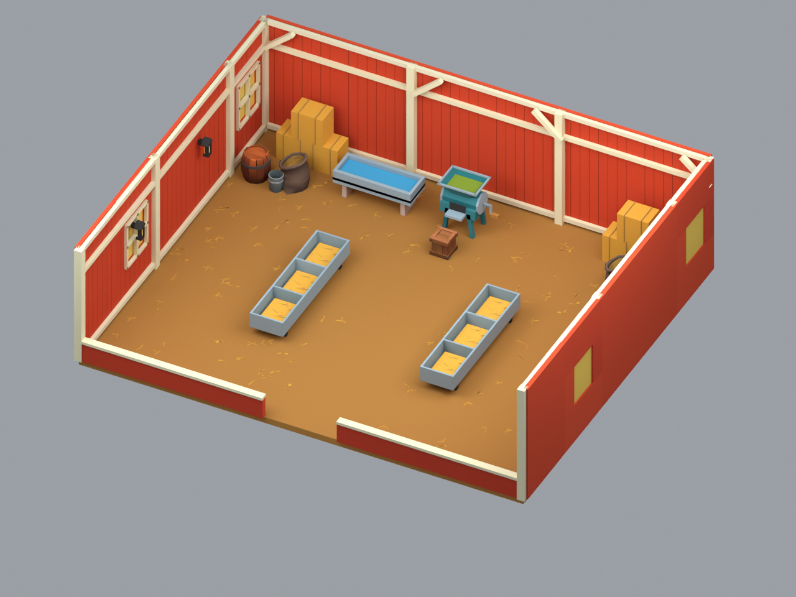
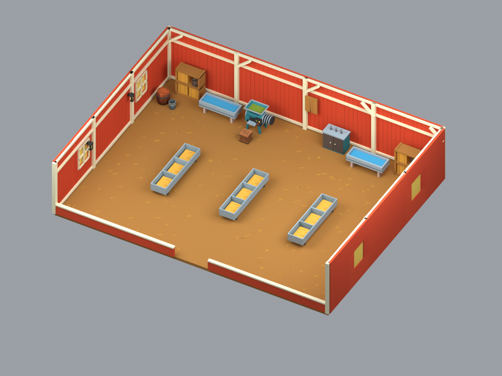
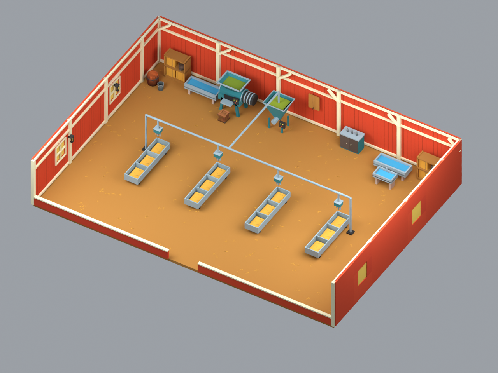
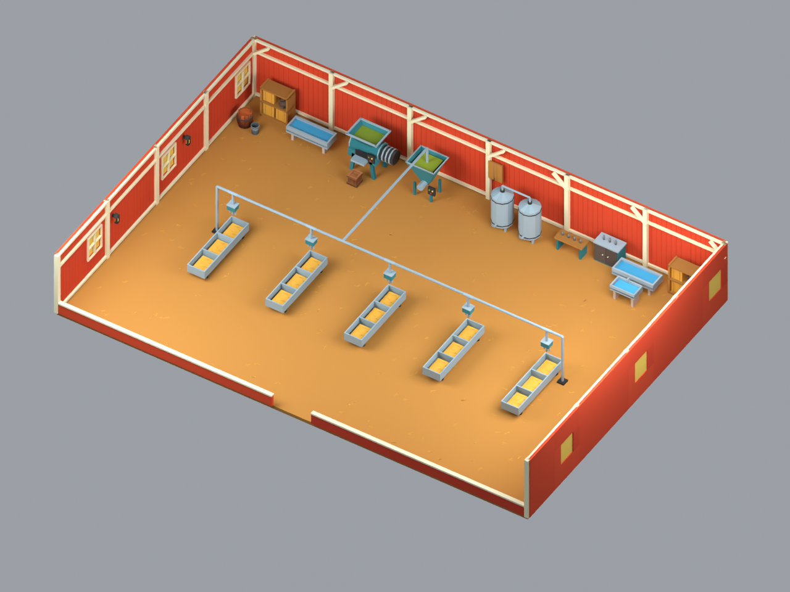

Empat tahap dari sketch yang disetujui. Atlas Toon Farm Pack yang sama dengan exterior, kit berulang, tanpa hewan. Warna pada game mengikuti shader dan pencahayaan Unity.




Detail kit, audit, dan batas integrasi · File master Blender
Scene Unity belum diubah. Hitungan vertex di atas adalah mesh Blender; UV/normal split dapat menaikkan vertex saat impor. Belum ada pengukuran FPS perangkat HP.